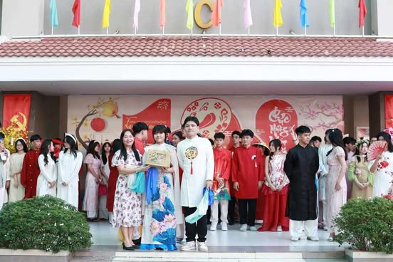

1.Giới thiệu sơ lược về trường thpt NHT
Trường Trung học Phổ thông (THPT) Nguyễn Hữu Thọ, tọa lạc tại số 02 Bến Vân Đồn, Phường 13, Quận 4, Thành phố Hồ Chí Minh, được thành lập vào năm 2004. Trải qua 20 năm xây dựng và phát triển, trường đã đào tạo nhiều thế hệ học sinh trưởng thành, góp phần đáng kể vào thành tích chung của ngành giáo dục thành phố. Với tổng diện tích xây dựng gần 11.400 m², trường được trang bị cơ sở vật chất hiện đại, bao gồm 45 phòng học, hội trường đa chức năng, sân thể dục, cây xanh và thảm cỏ. Các phòng học bộ môn được trang bị đầy đủ dụng cụ, máy móc, đáp ứng tốt nhu cầu giảng dạy và học tập.
2.Giới thiệu lịch sử thpt NHT
Trường Nguyễn Hữu Thọ được chính thức thành lập từ năm 1961 trải qua nhiều giai đoạn phát triển với nhiều thế hệ học sinh. Trường Nguyễn Hữu Thọ có bề dày truyền thống gần 50 năm lịch sử, là một trong những lá cờ đầu trong công tác giáo dục tỉnh nhà với tỉ lệ học sinh tốt nghiệp THPT hàng năm rất cao. Những cột mốc quan trọng trong quá trình phát triển trường: - Trường được xây dựng vào năm 1964, ban đầu chỉ có 2 phòng học toạ tại sân vận động Bến Lức, nay là Bệnh viện Bến Lức. - Năm 1966 cơ quan Quân Đội Hoa Kì đã sử dụng 2 phòng học này làm căn cứ, trường buộc phải mượn cơ sở của trường Tiểu học Bến Lức làm địa điểm dạy học. - Năm 1967 trường được xây dựng lại trên diện tích đất 15.000 mét vuông nằm trên quốc lộ 4 nay là Quốc lộ 1A thuộc ấp Vàm, Thị Trấn Bến Lức với tên trường là Trường cấp II - III Bến Lức sau đó tách trường giao cơ sở lại cho trường THCS Nguyễn Trung Trực. Hiện nay vị trí này là siêu thị Coop Mart Bến Lức Đến năm 2000 trường được xây dựng trên diện tích 51.865 mét vuông thuộc ấp Phước Tú, xã Thanh Phú, huyện Bến Lức. Trường nay là trường THPT Nguyễn Hữu Thọ.
3.Giới thiệu về thành tích chung thpt NHT trong 5 năm gần đây
Trường THPT Nguyễn Hữu Thọ, Quận 4, đã đạt được nhiều thành tích đáng chú ý trong 5 năm gần đây: - Đội ngũ giáo viên: 100% giáo viên của trường đều đạt chuẩn và vượt chuẩn, thể hiện sự đầu tư vào chất lượng giảng dạy. - Cơ sở vật chất: Nhà trường đã cải thiện cơ sở vật chất, trang bị đầy đủ dụng cụ và máy móc cho các phòng học bộ môn, đáp ứng tốt nhu cầu giảng dạy và học tập. - Tỷ lệ học sinh tốt nghiệp và đỗ đại học: Tỷ lệ này tăng dần qua từng năm, phản ánh hiệu quả trong công tác giáo dục và đào tạo của nhà trường. - Khen thưởng: Nhân dịp kỷ niệm 20 năm thành lập vào ngày 19/11/2024, trường đã được UBND TPHCM tặng Cờ truyền thống và Liên đoàn Lao động TPHCM trao Cờ thi đua hoàn thành xuất sắc nhiệm vụ Công đoàn năm học 2023 – 2024.
4.Hình ảnh từng mục, 1 video về trường
5.Giới thiệu các câu lạc bộ tại trường
6.Các hoạt động tại trường năm 2021-2022
- Thiết kế thiệp chào mừng 20/11
- Hội khỏe phù đổng - Cuộc thi trang trí mai đào
- Cuộc thi Rung chuông vàng
- Tiếng ca học đường
- Culture Ambassador
- Flashmob "Sắc màu tuổi trẻ"


7.Các hoạt động tại trường năm 2022-2023
8. Các hoạt động tại trường năm 2023-2024
- Hội khỏe Phù Đổng
- NHT Got Talent
- Ideal City - Green Lifestyle
- Hoa điểm 10
- Cuộc thi tháo lắp súng AK
- Food Time
- Hội chợ Xuân
- Nhảy Flash Mob


9.Các hoạt động tại trường năm 2024-2025
- Hoạt động quyên góp khắc phục hậu quả bảo số 3
- Kỉ niệm 20 năm thành lập trường THPT Nguyễn Hữu Thọ
- Cuộc thi cắm hoa
- Lễ kỉ niệm 42 năm ngày nhà giáo VN 20/11
- Cuộc thi kéo co
- Giải TTHS cấp trường
- Kì thi KHTN cấp tp 2024-2025
- Cuộc thi trang trí mâm quả
- Gian hàng ẩm thực
- Cuộc thi dịu dàng sắc xuân 
- Cuộc thi trang trí mai đào
- Hoạt động ngoại khóa tại Đ.Lạt
- Hoạt động ngoại khóa Cultural life
- Lễ kỉ niệm anh hùng liệt sĩ Nguyễn Văn Trỗi hy sinh
- Giải chạy S-Race
- Phiên tòa giả định
- Khai giải năm học 2024-2025
- Ngày hội chào đón hs khối 10